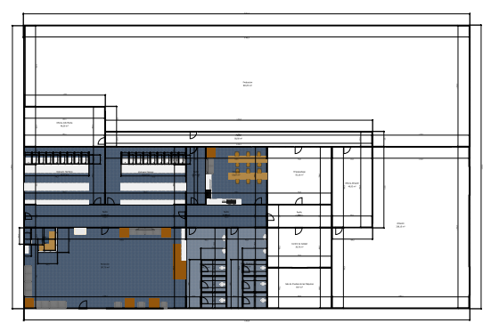
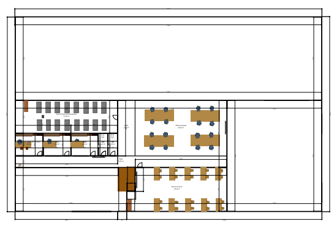
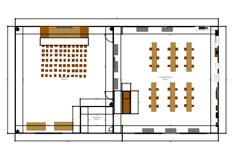
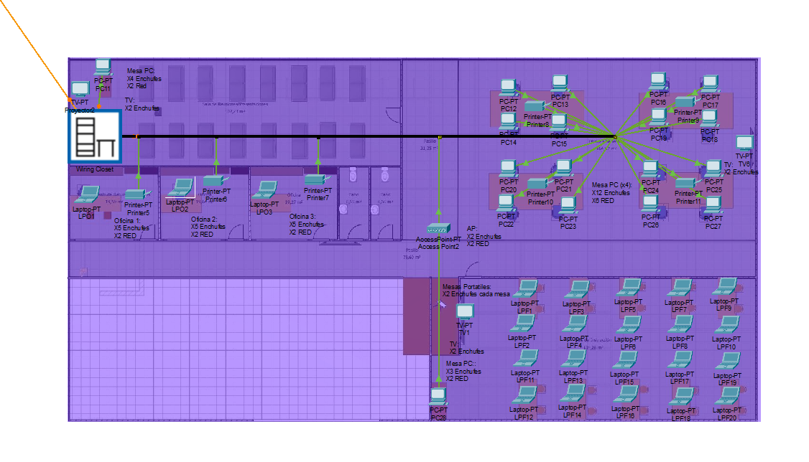
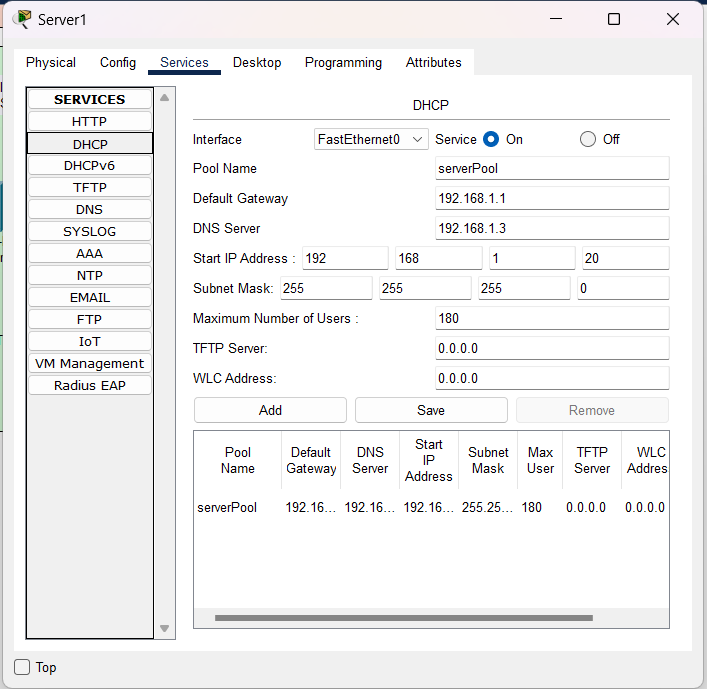
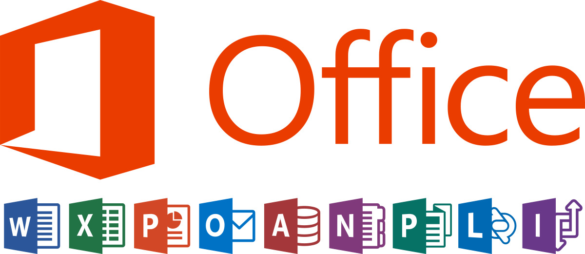

Making of Infraestructura Informática Empresa:
Aquí se explica el proceso a seguir para la creación y configuración de la estructura informática de nuestra empresa:
La creación de la infraestructura se dividió en doce apartados distintos, siendo los siguientes:
- 01 - Analisis de requisitos
- 02 - Plano donde se desplegará la red informática de la organización
- 03 - Diseño físico de la red
- 04 - Diseño lógico de la red
- 05 - Configuración de los servicios básicos para el funcionamiento de la red
- 06 - Presupuesto aproximado del coste del diseño
- 07 - Elegir el sistema operativo a utilizar y los servicios a instalar
- 08 - Instalación, configuración y verificación del sistema y servicios a nivel del servidor
- 09 - Instalación, configuración y verificación del sistema y servicios a nivel de cliente
- 10 - Guía de configuración de las diferentes instalaciones y servicios para entregarlo al cliente
- 11 - Guía descriptiva del hardware utilizado
- 12 - Guía descriptiva del software utilizado
01 - Analisis de requisitos
Necesitaremos:
- Servidor LINUX (DHCP) x1
- Servidor LINUX (DNS) x1
- Servidor LINUX (LDAP) x1
- Puntos de acceso x3
- Router x1
- Equipos Informático HP con garantía Care Pack (Torres, Portátiles, Teclados, Monitores, Ratones) x60
- Racks Grandes x1
- Racks Pequeños x2
- PatchPanels x4
- Switch x4
- Cableado 2500m Aprox.
- SAI x3
- ISP (Movistar)
- Enchufes x400
- Puntos de red x100
- Impresoras x3
- Sistema de almacenamiento (NAS) x5 (50TB)
- Webcams x36
- Dockstations x5
- Auriculares con micrófono x40
- Sistemas de ventilación y refrigeración
- Micrófonos x1
- Proyectores x5
- Televisiones x10
- Pack de Software Ofimático (Microsoft 365) x60
02 - Plano donde se desplegará la red informática de la organización
Plano primera planta:
Plano segunda planta:
Plano tercera planta:
Información Planos:
Todos los planos de este proyecto se crearon con SweetHome3D
Descarga el archivo SweetHome3D con los planos:

03 - Diseño físico de la red
Ubicación de los equipos y puertos de conexión:
Diseño físico de la red:
Todo el diseño físico de este proyecto se creó con Packet Tracer
Descarga el archivo PKT con el diseño físico:
04 - Diseño lógico de la red
Guía de IPs estáticas de la red:
Diseño lógico de la red:
Todo el diseño lógico de este proyecto se creó con Packet Tracer
Descarga el archivo PKT con el diseño lógico:
05 - Configuración de los servicios básicos para el funcionamiento de la red
Servicio básico:
El único servicio impresdicible que tenemos en nuestra red, es el servicio DHCP con IP 192.168.1.2, por la asignación dinámica de IPs de la red, utilizamos una IP 192.168.1.X con máscara 255.255.255.0, un límite de usuarios de 180, ponemos la IP del Router (GTW 192.168.1.1) y más adelante agregaremos la del servidor de DNS, aunque este no es imprescindible para el correcto funcionamiento de la red. Más adelante se configurará junto a un servidor LDAP.
Posteriormente se configuraron los otros dos servicios, en este caso en servidores separados. Se configuró un servidor DNS y un servidor LDAP. En el caso de estos dos servicios, se podrían configurar ambos en un mismo servidor, se decidió hacer en servidores separados para asegurarse de que en caso de fallo de un servidor no fallen los dos servicios.
El servicio DNS se instaló en un servidor con las mismas caracteristicas del servidor DHCP, para el servicio DNS se utilizó bin9. Este servidor se configuró con los forwarders 8.8.8.8 y 1.1.1.1 para que la resolución de nombres funcione de forma correcta, no solo con nuestros propios registros. La IP del servidor DNS es la 192.168.1.3
El servicio de LDAP se instaló en un servidor con las mismas caracteristicas del servidor DHCP y DNS, para el servicio LDAP se utilizó sldap y phpldapadmin (Se trata de una interfaz web con la que se puede modificar LDAP, crear, modificar... usuarios, uo...). La IP del servidor LDAP es la 192.168.1.4
Para mayor seguridad, en cada AP, está configurada una autenticación de tipo WPA2-PSK, con una PassPhrase (Projecte5$) encriptada con AES y un SSID (Projecte5).
06 - Presupuesto aproximado del coste del diseño
Se creó un presupuesto aproximado de costes del diseño de la red de la organización. En este se incluyeron:
- Objeto
- Coste por unidad
- Enlace
- Marca y modelo
- Características importantes
- Cantidad
- Precio final
- Pago Anual (S/N)
07 - Elegir el sistema operativo a utilizar y los servicios a instalar
Entorno Microsoft:
Se decididó utilizar el entorno de Microsoft 365, ya que ofrece todos los servicios básicos para trabajar: Outlook, PowerPoint, Word, Excel, OneDrive, Microsoft Teams, SharePoint, Access...
Todo esto, combinado con el sistema operativo Windows 11.
La razón de esta elección y no otra, es la inmensa mayoría de programas, están disponibles en Windows, así que no tendremos ningún problema de compatibilidad. Y dentro de Windows, por defecto, ya se incluyen instalados todos los programas del entorno de Microsoft.
Ubuntu Server 20.04:

En este proyecto se ha utilizado un servidor de Ubuntu Server (Versión 20.04), ya que se nos especificó que debiamos utilizar como servidores Ubuntu Server, también es el sistema con el que estamos más familiarizados y la versión 20.04 trata de una LTS, las cuales tienen actualizaciones y soporte a largo plazo.
Ubuntu Server es una excelente opción para servidores gracias a su seguridad y estabilidad, así como a sus actualizaciones y soporte a largo plazo. Además, su comunidad activa y su amplio soporte para software le hacen una opción ideal para empresas y organizaciones.
pGina (clientes):
En los clientes Windows 11, se decidió instalar un software externo (pGina), para poder acceder a los usuarios del servidor LDAP desde los clientes. Esto facilita el inicio de sesión en usuarios creados con LDAP desde clientes windows.